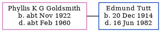

Phyllis Tutt (née Goldsmith) cNov 1922 - c1960
[ Home ] | [ Calendar ] | [ Surnames Index ] | [ Errors ] | [ Family History ]Phyllis Goldsmith, the wife of Edmund Thomas Tutt (the second cousin once-removed on the father's side of Nigel Horne), was born in Thanet, Kent, England c. Nov 19221,2. She married Edmund (an agricultural labourer) in Thanet around Aug 19553, which is also where she died c. Feb 19602.
Citations
- England & Wales births 1837-2006 - Findmypast
- England & Wales deaths 1837-2007 - Findmypast
- England & Wales Marriages 1837-2005 - Findmypast
Media
England & Wales births 1837-2006 - BMD/B/1922/4/AZ/000486/143
England & Wales deaths 1837-2007 - BMD/D/1960/1/AZ/001196/094
Family Tree
Map
Generated by ged2site. Last updated on Jul 3, 2024
Known Issues
1939 UK register information missing